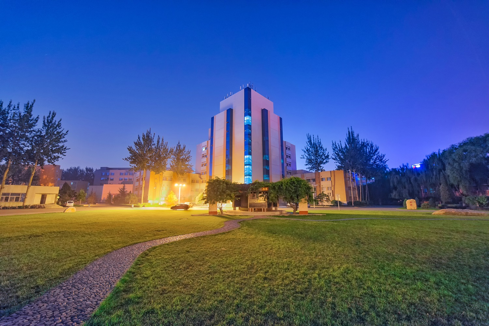
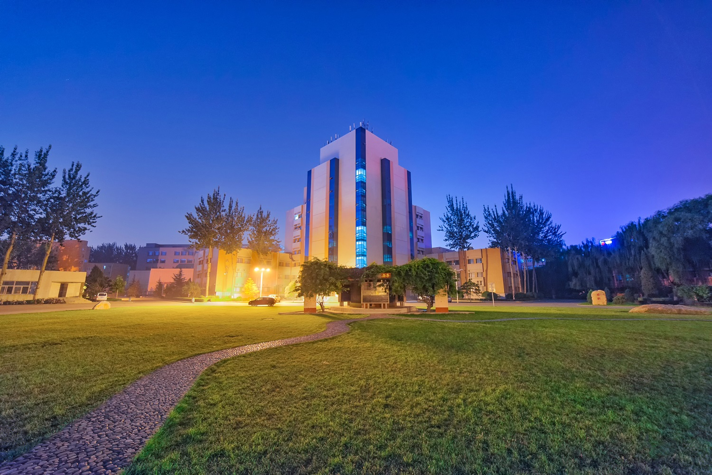

山西大学
===== 点击下方图片即可快速访问SXU官网=====

 

山西大学是中国办学历史最悠久的高等学府之一，是国家“双一流”建设高校，是教育部和山西省人民政府共同建设的部省合建大学。
山西大学目前拥有坞城校区、东山校区、大东关校区等三个校区，总占地面积3008亩，建筑面积116.64万平米，是全国文明校园、山西省园林化单位和绿色学校。 学校现有教学、科研仪器设备资产总值13.56亿元，本科教学实验仪器设备达到21259台（套）。学校图书馆是全国古籍重点保护单位，馆藏图书230万册，电子期刊110万册。
山西大学文学院历史悠久，起自1902年的山西大学堂中学专斋，几度易名国文学类、国文学系和中国语文系，2001 年在原中文系基础上成立山西大学文学院。 2007年依托古代文学研究所成立山西大学国学院，依托方言研究中心成立山西大学语言科学研究所。
百余年来，文学院名家辈出，高本汉、黄侃、李亮工、柏逸荪、姚青苗都曾在这里执教，尤其是姚奠中先生在此执教半个多世纪，将章门薪火传于山右，沁入文学院灵魂深处。 几代学人继往开来，以弘扬国学正脉为职志，注重经史文献功底，开掘地方人文资源。在诗经学、汉语方言学、北方民族政权下的文学与文化研究、俗文学和非遗研究等领域屡创佳绩，具有良好声誉。
山西大学自动化与软件学院成立于2020年，由原山西大学自动化系和软件学院组成。目前有教职工113人，专职教师80人，其中副高以上职称40人，博士生导师3人，硕士生导师40人，具有博士学位者40人，山西省“双师型”教学名师1人。 教师逐步形成控制装备应用、电站控制系统优化、测控技术研究与应用、机电传动与控制、网络化控制与应用、中文信息处理与机器学习、计算机视觉、信息安全、软件可靠性、软件系统开发等研究方向，教研、科研成果丰富。 建成高水平工程实践中心，能够给所属专业学生提供全面的工程能力训练条件。现有达到国内先进水平的西门子先进自动化联合示范实验中心、罗克韦尔自动化电力行业示范中心、自动化综合实训基地、博世力士乐液压气动工程中心、DCS实验室、软件工程基础实验室4个，软件工程专业实验室3个，网络技术实验室1个，微机原理实验室1个等，建筑面积近7000平方米。2014年先进控制工程实验教学中心获批省级实验教学示范中心。绿色能源与智能电力协同创新实验室、倒立摆实验室、电站复杂过程控制与优化实验室等研究型实验室服务于专业教师和学生的科研及创新。
Nothing！！！